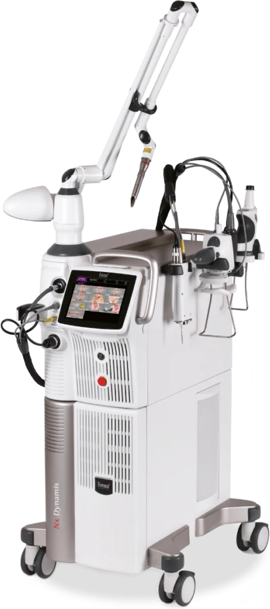

Fotona 4D in Penang | CANVAS Medical Clinic
A non-surgical laser facelift, no needles required — physician-led Fotona 4D at our Gurney Walk clinic in George Town. Two laser wavelengths work across four modes, inside the mouth and over the face, to lift, tighten, smooth wrinkles and refresh the skin with little to no downtime.


What is Fotona 4D?
Fotona 4D is a non-surgical laser facelift that combines two complementary laser wavelengths — Nd:YAG (1064 nm) and Er:YAG (2940 nm) — across four treatment modes. Working both from inside the mouth and across the surface of the skin, it addresses the face in layers: firming deep structures, remodelling collagen, and refining the surface, all without injections or surgery.
At CANVAS Medical Clinic in George Town, Penang, Fotona 4D is planned and delivered under physician supervision. It suits patients who want a natural lift and smoother, fresher skin without downtime — the applicator does the work while your physician tailors which modes your face needs.
The four modes
SmoothLiftin
Laser energy delivered inside the mouth heats the dermis from beneath to firm the mid-face and soften nasolabial folds.
FRAC3
A fractional Nd:YAG pulse targets pigment, fine lines and deeper texture in scattered micro-zones.
PIANO
A super-long Nd:YAG pulse delivers deep, uniform heating to tighten skin and stimulate collagen.
SupErficial
A light Er:YAG peel refines the surface, evens tone and gives skin a fresh, post-treatment glow.
How it works
- Consultation & assessment. A CANVAS physician assesses your skin and goals and confirms Fotona 4D suits your stage of laxity and concerns.
- Mode selection. Your physician chooses which of the four modes to combine — lifting, resurfacing, tightening and peel — for your face.
- Treatment. The laser is applied inside the mouth and across the face in sequence. Most patients feel warmth; the session is comfortable and needle-free.
- Results & series. Some freshness shows early, with lifting and tightening building over weeks as collagen renews. A short series is planned for the fuller effect.
Benefits
Needle-free lift
A genuine lifting and tightening effect without injections, threads or surgery.
Works in layers
Four modes treat deep, medial and surface structures for a complete result.
Smoother wrinkles
Softens fine lines and folds while refreshing overall skin quality.
Collagen stimulation
Deep heating encourages your own collagen for gradual, natural firming.
Little to no downtime
A comfortable option that fits around work and daily life.
Fresh, glowing finish
The surface peel leaves skin looking bright and refreshed.
Who it's for
Fotona 4D suits those seeking non-surgical lifting and refreshed skin, but suitability is always confirmed at consultation. You may be a good candidate if you want to:
- Lift and firm the mid-face and jawline without surgery
- Soften nasolabial folds and fine lines
- Tighten early to moderate skin laxity
- Improve skin tone, texture and glow
- Avoid needles, threads and downtime
- Build a natural, physician-led rejuvenation plan
Fotona 4D is not suitable during pregnancy, over active infection in the area, or with certain photosensitising medications and conditions. Advanced sagging may need other options. Your physician will confirm suitability and set honest expectations at consultation.
Fotona 4D vs EMFACE vs HIFU
Fotona 4D lifts and tightens with two laser wavelengths across four modes, working inside and out — needle-free with little downtime. EMFACE lifts by toning facial muscles and stimulating collagen with radiofrequency. HIFU reaches the deeper SMAS layer with focused ultrasound for a firmer structural lift.
Laser lifting, resurfacing and glow in one: Fotona 4D. Muscle-and-skin lift with no needles: EMFACE. Deep structural lift: HIFU. Many plans combine them, and your CANVAS physician will sequence what your face needs.
Why CANVAS
At CANVAS Medical Clinic, Fotona 4D is delivered by qualified, LCP-certified physicians on genuine Fotona technology — never handed to an unsupervised operator. We treat the broad range of skin types common to Penang and tailor every protocol to you.
We are located at Gurney Walk in the heart of George Town, with covered parking at Gurney Walk and the adjacent Gurney Plaza. We follow a less-is-more philosophy: gradual, natural-looking results over a planned series.
- LCP-certified physicians plan and supervise every Fotona 4D session
- Genuine Fotona platform with modes tailored to your face
- Honest assessment of whether laser, RF or ultrasound suits you best
- Protocols suited to the diverse skin tones seen across Penang
- Central Gurney Walk location with easy covered parking
Fotona 4D in Penang, answered.
Care led by our physicians
Your Fotona 4D treatment at CANVAS is planned and carried out by qualified, LCP-certified doctors registered with the Malaysian Medical Council — care is never delegated to unsupervised operators. Meet the physicians behind your treatment:
- LCP CertifiedPhysician-led care
- MMC RegisteredQualified doctors
- Genuine SystemsAuthentic & registered
- Open Daily10am – 10pm
Related treatments
Explore other physician-led lifting and skin treatments at our Gurney Walk clinic in George Town, Penang.
From our patients
Read our reviews on Google →Considering Fotona 4D in Penang?
Book a consultation with our physicians at Gurney Walk. We'll assess your skin and design a Fotona 4D plan that lifts and refreshes — needle-free, at a pace that suits you.
Reserve a Consultation